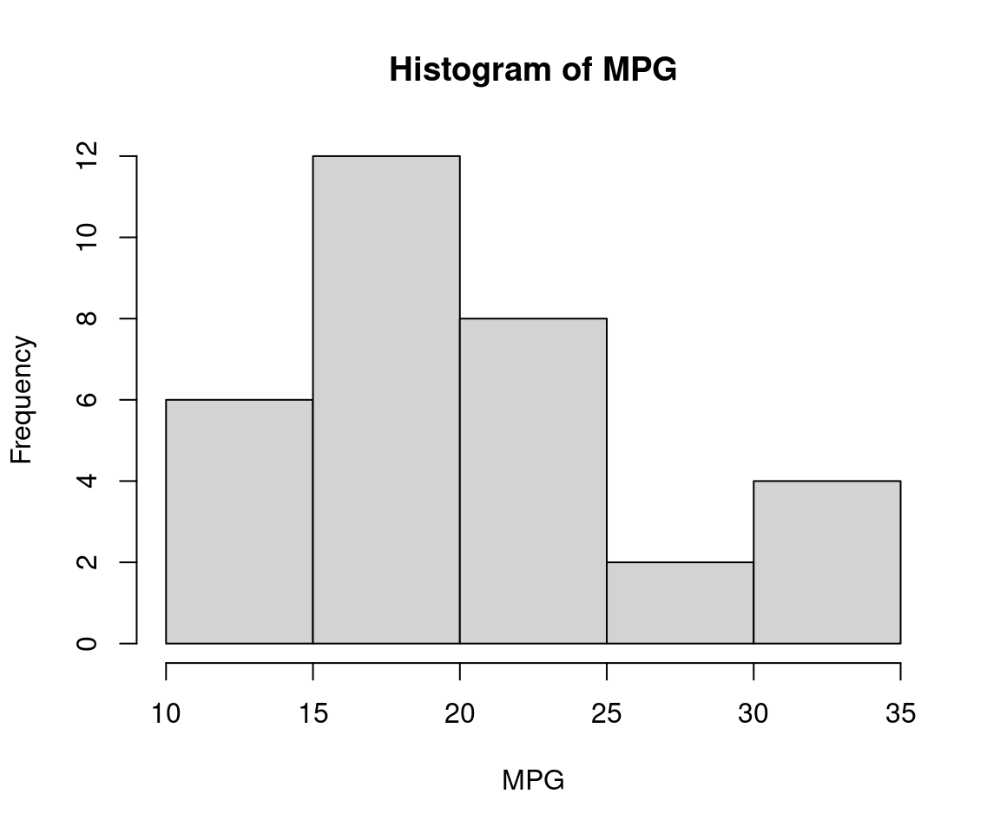

4 Vision
Another prevalent use of LLMs is in the form of vision language models (VLMs). In the previous chapter, tasks involved generating text from text input alone; now these tasks include generating text based on image and text instructions. For example, we might want a VLM to write a short comment about a graph or even perform optical character recognition (OCR) tasks. Unlike typical LLMs that do not have the capability to process images directly, VLMs are enabled with the ability to read images, typically in base64 format, which is commonly used to embed images in HTML files. Base64-encoded images are essentially strings of text, explaining why vision language models can effectively handle image data.
In this chapter, we will explore how to perform several image-and-text to text generation tasks in R using the rollama package for a variety of relevant use cases in academic and medical research. Again, for the generated text, you will actually get different results from mine due to the random nature of text generation process.
4.1 Preliminaries
Load these packages,
Make sure that your Ollama is running,
ping_ollama() # ensure it's running▶ Ollama (v0.5.1) is running at <http://localhost:11434>!# list_models()$name #> run this to view available models in your systemGive names to our buddies,
moondream = "moondream" # small vision model
minicpm = "minicpm-v" # uses Qwen2:7b
llava = "llava-llama3" # llava + llama34.2 Interpreting an Image
Suppose we want a VLM to describe the image of the NVIDIA GPU in Chapter 2, which I placed at the path “img/nvidia.jpeg” in my local PC.
We can use the same query() function, with the addition of images = option,
The image features a computer graphics rendering of a computer chip, specifically a graphics processing unit (GPU). The GPU is positioned in the center of the frame and appears to be facing towards the right side. It has a black and silver color scheme with a fan located on top of it. The background of the image consists of green lines that extend from both sides of the frame, creating an abstract pattern.4.3 Interpreting Multiple Images
The images = option can support multiple images. Now, we try more than one image,
query("Describe the images:",
llava, # model dependent, llava can interpret more than 1 image
images = c("img/gpt_down.png", "img/gpt_limit.png"))── Answer from llava-llama3 ─────────────────────────────────────────────────The image captures a screenshot of a message from the Chatbot on a messaging
platform. The Chatbot, named "ChatGPT", is displayed with a blue header and
footer against a white background. The header prominently displays the words
"New chat" in black text, indicating that a new chat has been initiated.Just below the header, there's a brief introduction of the Chatbot in black
text: "You're hit the Free plan limit for CGPT-0". This suggests that the
user has exceeded the free plan limit for CGPT-0 and is now required to
upgrade to a paid plan.The footer of the message contains two options for the user: "Get Plus" and
"Message ChatGPT". The "Get Plus" option is presumably for upgrading to a
paid plan, while the "Message ChatGPT" option allows the user to initiate a
new chat.In the bottom right corner of the screenshot, there's a small icon with a
blue circle and white plus sign inside it, possibly indicating that the user
has unread messages in their inbox or has a pending request. The overall
design of the message suggests a simple yet effective way of communicating
with users about plan limits and upgrading options on the messaging
platform.Not all VLM supports multiple images. You can try with minicpm-v, and you will be greeted with an error.
4.4 Interpreting a Plot
Plot MPG from mtcars dataset,
hist(mtcars$mpg, main = "Histogram of MPG", xlab = "MPG")
Because query() requires image input for images = option, we save the histogram as “img.png” first,
image_name = "img.png"
png(image_name)
hist(mtcars$mpg, main = "Histogram of MPG", xlab = "MPG")
dev.off()png
2 Now, we can send the query a VLM model to describe the image,
The provided histogram displays a distribution of miles per gallon (MPG) for vehicles. The x-axis represents MPG values ranging from 10 to 35, while the y-axis shows the frequency of each MPG value encountered in a dataset or study.
Key observations include:
- A significant number of vehicle models achieve an MPGe of approximately 26.
- Another notable peak is observed at around 19.5 MPGe with frequent occurrences.
- The highest frequencies are clustered between 10 and 30 MPG, particularly noticeable for the range from 15 to 27 MPG.
This distribution helps in understanding typical fuel efficiency across vehicle models studied or a specific dataset analyzed.4.5 R Coding from Image
Maybe you came across a nice looking plot, and you wonder how to come up with a similar plot in R. Let’s try with this plot,
We try utilizing minicpm-v for this task, which relies on Qwen2:7b. I found the LLM good for R coding as compared to llava-llama3,
To create a histogram similar to the one shown in the provided figures, you can use the `ggplot2` package in R. Here's an example of how you might write this:
```r
# Required packages
library(ggplot2)
# Assume we have data stored as vectors for simplicity.
weights <- c(105, 98, 73, 64, 51) # Example weights
# Plotting the histogram using ggplot2
ggplot(data.frame(A = rep(weights, each = length(weights))), aes(x = A)) +
geom_histogram(binwidth = 1,
fill = "lightyellow",
color = "black",
binlimit = c(0, 100))
```
This code snippet uses `ggplot2` to create a histogram where the weights are represented in separate groups. You'll need to replace `weights` with your actual dataset if you have more data points.
Remember that this example is just one approach and the exact details of how you use it will depend on your specific requirements!Now we copy and paste, and execute the generated code,
# Required packages
library(ggplot2)
# Assume we have data stored as vectors for simplicity.
weights <- c(105, 98, 73, 64, 51) # Example weights
# Plotting the histogram using ggplot2
ggplot(data.frame(A = rep(weights, each = length(weights))), aes(x = A)) +
geom_histogram(binwidth = 1,
fill = "lightyellow",
color = "black",
binlimit = c(0, 100))Warning in geom_histogram(binwidth = 1, fill = "lightyellow", color = "black",
: Ignoring unknown parameters: `binlimit`We noted that the plot we obtained does not resemble the provided image, except for the bar colour and the x-axis label. We also encountered an error from an unknown parameter binlimit. At times, our buddies can actually make-up non-existent options. But at least, it suggested using ggplot2 and fill = "lightyellow" among others.
Let’s try with a larger LLM, llama3.2-vision, an 11b model.
query("Write R code to plot the image. Only return the raw code. Do not comment.", "llama3.2-vision", images = "img/histogram.png",
output = "text", screen = FALSE,
model_params = list(seed = 123)
) -> tempa
cat(tempa)```R
library(ggplot2)
data <- data.frame(Weight = c(0, 20, 40, 60, 100), Frequency = c(0, 30, 120, 210, 0))
ggplot(data, aes(x = Weight, y = Frequency)) +
geom_bar(stat = "identity") +
labs(title = "Histogram of Weight (kg)", x = "Weight (kg)", y = "Frequency")
```We can save the generated code in a file namely tmp.R, then source() it,
tempb = gsub("```R", "", tempa)
tempb = gsub("```r", "", tempb)
tempb = gsub("```", "", tempb)
tempb |> cat() |> capture.output(file = "tmp.R")
source("tmp.R", print.eval=TRUE)of which, the color does not look right, although it is quite an improvement over the previous LLM model.
Let’s cheat a bit, I obtained the following R code from OpenAI’s GPT4o with a prompt “Write R code to come up with this image.” for the same image,
# Sample Data
set.seed(123)
weights <- rnorm(1000, mean = 50, sd = 15)
# Histogram Plot
hist(weights,
breaks = 10,
col = "cornsilk",
border = "black",
main = "Histogram of Weight (kg)",
xlab = "Weight (kg)",
ylab = "Frequency",
xlim = c(0, 100),
ylim = c(0, 250),
las = 1,
cex.main = 1.5,
cex.lab = 1.2,
cex.axis = 1)which looks closely similar to the provided plot, although it did not use ggplot21. This seems to be the limitation of the local LLMs that we have tried so far.
4.6 R Coding from Image – Two-step Approach
Instead of relying on only one VLM, what if we combine a VLM with another LLM that is good at coding?
Let’s try our idea. We start by asking llama3.2-vision to describe the image in detail,
query("Provide a clear and detailed description of the image to accurately recreate it as a chart. Include the type of plot, data points, axis labels, scale, colours, and any other relevant details needed for precise reproduction."
, "llama3.2-vision", images = "img/histogram.png",
output = "text", screen = FALSE,
model_params = list(seed = 111)
) -> temp1a
cat(temp1a)Based on the provided description, here is a structured drawing of the histogram:
**Title:** Histogram of Weight (kg)
**Type:** Vertical Bar Plot
**X-axis:**
* **Major Ticks:** 0, 25, 50, 75, 100
* **Minor Ticks:** Not explicitly mentioned, but implied as increments of 5 or 10 between major ticks
* **Label:** Weight (kg)
**Y-axis:**
* **Major Ticks:** 0, 100, 200
* **Minor Ticks:** Not explicitly mentioned, but implied as increments of 20 between major ticks
* **Label:** Frequency
**Bars:**
* **Color:** Khaki (a shade of brown)
* **Bar 1:** Weight 25 kg, Height approximately 40 units
* **Bar 2:** Weight 50 kg, Height approximately 240 units
* **Bar 3:** Weight 75 kg, Height approximately 120 units
* **Bar 4:** Weight 100 kg, Height approximately 0 units
**Observations:**
* The histogram shows a skewed distribution with most weights concentrated around 50 kg.
* There are no weights below 25 kg or above 100 kg.
* The frequency of weights decreases as the weight increases beyond 75 kg.Then we ask qwen2.5-coder:7b to generate the code for the image description,
```R
# Sample data for the histogram
weights <- c(25, 50, 75, 100)
frequencies <- c(40, 240, 120, 0)
# Create the histogram
barplot(frequencies,
names.arg = weights,
xlab = "Weight (kg)",
ylab = "Frequency",
main = "Histogram of Weight (kg)",
col = "khaki",
ylim = c(0, 250))
```We can save the generated code in a file namely tmp1.R, then source() it,
temp1c = gsub("```R", "", temp1b)
temp1c = gsub("```r", "", temp1c)
temp1c = gsub("```", "", temp1c)
temp1c |> cat() |> capture.output(file = "tmp1.R")
source("tmp1.R", print.eval=TRUE)Now, plot looks better with this two-step approach. Because the code generation is not deterministic in nature, you can always regenerate the code by removing the seed number.
4.7 VLMs as OCR Tools
Let’s try out VLMs as OCR tools. Say we have a PDF file from https://wnarifin.github.io/misc/Attitude_Statistics%20v3%20Questions.pdf.
First, convert the PDF (the PDF only contains one page) into PNG,
library(magick)
image = image_read_pdf("https://wnarifin.github.io/misc/Attitude_Statistics%20v3%20Questions.pdf")
image_write(image, path = "img/q.png")Then, we ask llama3.2-vision to read the image and return the text,
The following is the exact text from the image:
**The following questions are about attitude towards statistics. Each question is rated on a scale ranging from 1 (strongly disagree) to 5 (strongly agree). Please circle your answer based on the scale accordingly.**
**Questions:**
1. I love all analysis.
2. I dream of normal distribution.
3. I think of probability in life.
4. Statistics lecture is interesting.
5. Statistics is easy to understand.
6. I like statistics.
7. I like to deal with data.
8. I think statistics lecture is important.
9. Statistics is important in research.
10. Statistics lecture is important.
11. I like to do statistical analysis.
12. I carry statistics books wherever I go.
**Note:** The image appears to be a survey or questionnaire related to attitudes towards statistics, but the specific context and purpose are not clear without additional information.Let’s compare the output to OCR,
library(tesseract)
img = image_read("img/q.png") # from `magick`
text = ocr(img)
cat(text)The following questions are about attitude towards statistics. Each question is
rated on scale ranging from 1 (strongly disagree) to 5 (strongly agree). Please
circle your answer based on scale accordingly.
Strongly Disagree Neutral Agree Strongly
disagree agree
1 Ilove all analysis. 1 2 3 4 5
2 |dream of normal distribution. 1 2 3 4 5
3 | think of probability in life. 1 2 3 4 5
4 Statistics lecture is interesting. 1 2 3 4 5
5 Statistics is easy to understand. 1 2 3 4 5
6 | like statistics. 1 2 3 4 5
7 | like to deal with data. 1 2 3 4 5
8 | think statistics lecture is important. 1 2 3 4 5
9 Statistics is important in research. 1 2 3 4 5
10 Statistics lecture is important. 1 2 3 4 5
11 | like to do statistical analysis. 1 2 3 4 5
12 | carry statistics books where ever | go. 1 2 3 4 5The output of the LLM is quite comparable to that of OCR (after several refresh/regeneration though). Another notable difference is the absence of the Likert scale from 1 to 5 from the output. You may try using other images containing text. From my testing, it occasionally comments on or generates non-existent text.
4.8 Interpreting a Result Table
Now, we try to ask VLMs to interpret statistical result tables, which are commonly found in academic journals. Let’s try with this table from https://wnarifin.github.io/2024-r-conf-my-pres-R/#29,
Using llama3.2-vision, we ask it to interpret the table while providing it with some contexts,
q_text = "
Interpret the statistical result as given in the table.
This was the result for a multiple logistic regression analysis for
determining the associated factors of coronary artery disease.
"
query(q_text, "llama3.2-vision", images = "img/tbl1.png",
output = "text", screen = FALSE,
model_params = list(seed = 123)) |> cat()The table presents the results of a multiple logistic regression analysis examining the associated factors of coronary artery disease (CAD). The variables included are DBP (diastolic blood pressure) and gender.
**Step 1: Understanding the Variables**
* **DBP**: Diastolic Blood Pressure, measured in mmHg.
* **Gender**: Categorical variable indicating male or female.
**Step 2: Interpreting Odds Ratios (OR)**
* The odds ratio (OR) is a measure of association between an exposure and an outcome. An OR greater than 1 indicates an increased risk, while an OR less than 1 indicates a decreased risk.
* For DBP, the OR is 1.641 with a 95% confidence interval (CI) ranging from 1.055 to 4.935. This suggests that for every 10mmHg increase in diastolic blood pressure, there is an approximately 64% increase in the odds of developing CAD.
* For Gender, the OR is 2.238 with a 95% CI ranging from 1.055 to 4.935. This indicates that males have approximately twice the odds of developing CAD compared to females.
**Step 3: Interpreting P-Values**
* The p-value represents the probability of observing the results (or more extreme) assuming there is no real effect. A small p-value (typically <0.05) suggests statistical significance.
* For both DBP and Gender, the p-values are less than 0.001, indicating that these factors are statistically significant predictors of CAD.
**Conclusion**
The analysis reveals that higher diastolic blood pressure and male gender are associated with an increased risk of developing coronary artery disease. These findings suggest that controlling blood pressure and promoting gender equality in health care may be important strategies for preventing CAD.In this case, it performed quite well when you give it relevant contexts, although it got the lower limit of 95% CI and _P_value for DBP wrong.
4.9 Performing OCR on a Result Table
Then, we ask llama3.2-vision to read the table and return the text with formatting. This is more challenging than it involves recognizing the lines and arrangement of cells in the table.
### Associated Factors of Coronary Artery Disease (n = 200)
| **Factors** | **b** | **SE** | **Adj. OR** | **95% CI** | **z-s** |
| --- | --- | --- | --- | --- | --- |
| DBP (by 10mmHg) | 0.495 | 0.146 | 1.641 | 1.24, 2.21 | 3.38 |
| Gender (Male vs Female) | 0.806 | 0.391 | 2.238 | 1.055, 4.935 | 2.06 |
### Notes
* OR = odds ratio
* SE = standard errorIt scanned the table quite well, except it missed the P-values. From the scanned text, you can get well-formatted text if it is processed as Markdown,
Associated Factors of Coronary Artery Disease (n = 200)
Factors b SE Adj. OR 95% CI z-s DBP (by 10mmHg) 0.495 0.146 1.641 1.24, 2.21 3.38 Gender (Male vs Female) 0.806 0.391 2.238 1.055, 4.935 2.06 Notes
- OR = odds ratio
- SE = standard error
as compared to the original table,
4.10 Deep-dive: How it works
In progress …
References
The code to generate the original plot uses
ggplot2(https://wnarifin.github.io/2024-r-conf-my-pres-R/#39).↩︎